Соберите собственный рабочий процесс с ИИ для работы над кодом
Bachata — это расширение VS Code, позволяющее ИИ-ассистентам работать вместе по шагам, которые задаёте вы: один планирует, другой возражает, они проверяют и дорабатывают, а вы решаете, что важно.
Обзор
Что такое Bachata
ИИ-ассистент — это инструмент, которого вы обычными словами просите помочь с задачами: спланировать функцию, написать код или найти ошибки. Bachata работает внутри Visual Studio Code и координирует ассистентов, которые у вас уже есть, например Codex и Claude Code.
Вы выстраиваете работу как конвейер — последовательность шагов, у каждого из которых есть роль, инструкции и ассистент, который его выполняет. Например, два проверяющих читают код независимо, затем оспаривают замечания друг друга, пока не придут к согласию или не передадут разногласие вам.
Задайте рабочий процесс
Роли, инструкции, порядок шагов и раунды проверки.
Выберите, кто делает работу
Назначьте каждой роли Codex, Claude Code или чат в браузере.
Переиспользуйте и меняйте
Начните со встроенного конвейера, измените его или создайте свой.
Следите за результатом
Замечания, решения и изменения вместе с проверками, которые действительно выполнялись.
Bachata не включает ИИ-сервис или подписку. Она никогда не создаёт коммит Git. ИИ может ошибаться даже при согласии ассистентов, а завершённый запуск не доказывает, что код верен.
Требования
- VS Code 1.101.0 или новее.
- Папка, открытая в доверенном локальном окне VS Code. Обычным конвейерам Git не нужен. Для выполнения списка задач требуются репозиторий Git и Git 2.32 или новее.
- Codex или Claude Code, установленные, со входом, выполненным отдельно. Установите оба, если хотите, чтобы два ассистента перепроверяли друг друга.
- Необязательно: Browser Bridge расширение Chrome, чтобы использовать ChatGPT, Claude или другой чат-сайт как участника.
Начало работы
Установка
- Установка Bachata из Visual Studio Marketplace. Для офлайн-сборки или сборки для разработки откройте палитру команд, выполните Extensions: Install from VSIX… и выберите предоставленный файл Bachata
.vsix. - Откройте папку, с которой хотите работать, в доверенном локальном окне VS Code.
- Установите Codex или Claude Code и выполните вход через их собственный процесс входа в CLI.
Без репозитория Git обычные конвейеры всё равно работают, но отслеживание изменений через Git, проверка области записи, экспорт патчей и сведение изменений репозитория недоступны.
Bachata добавляет значок Bachata на панель действий и пошаговое руководство Начало работы с Bachata на страницу приветствия VS Code.
Проверка готовности через «Диагностику»
Выполните Bachata: Диагностика. «Диагностика» отделяет препятствия для выбранного конвейера от недоступных необязательных провайдеров, а каждая неуспешная проверка предлагает конкретные действия и точечную перепроверку.
- Codex проверяется рукопожатием app-server. Тред не создаётся, модель не вызывается.
- Claude Code проверяется командой
claude --version. - Проверки выполняются в корне рабочей области с ограниченным окружением. CLI, который есть только в вашей интерактивной оболочке
PATH, не виден: задайтеbachata.codexCommandилиbachata.claudeCommand, указав абсолютный путь.
Первая проверка
- Выполните Bachata: Настройка. Выберите Проверить код. Стандартный сценарий также предлагает Спланировать изменение и Исправить ошибку; оркестрация TODO, браузерные провайдеры и пользовательские конвейеры находятся в разделе Расширенные рабочие процессы.
- Выберите Один быстрый агент (работу делает один провайдер) или Взаимная проверка парой (два участника работают отдельно и перепроверяют один проход). Мастер настройки перечисляет готовых провайдеров и то, чего не хватает отсутствующему.
- Опишите в поле ввода, что нужно проверить. Можно начать и из редактора: Bachata: Проверить файл, Проверить выделенный фрагмент, Проверить незакоммиченные изменения и похожие команды готовят черновик, не отправляя его.
- Откройте настройки запуска и прочитайте его условия: что запуск может читать и записывать, какие провайдеры участвуют и какие проверки выполняются.
- Отправьте. Когда запуск завершится, откройте результат.
{kind=link}
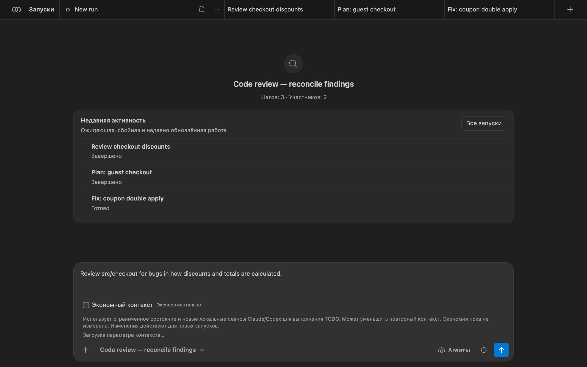
Работа с Bachata
Панель Bachata
Откройте её командой Bachata: Открыть или значком на панели действий. Каждый запуск — это вкладка сверху. У запуска три представления:
- «Чат» — ваш запрос и ответы каждого участника по порядку.
- «Выполнение» — шаги конвейера с их состоянием и результат запуска.
- «Направление» — цель проекта, решения, ожидающие вас, и принятые замечания, которые ещё нужно исправить, по всем запускам.

«Запуски» открывает панель запусков: поиск по запускам и промптам, показ архивных запусков и переход в «Направление». Меню … каждого запуска позволяет переименовать, продублировать, заархивировать или удалить его.
{kind=link}
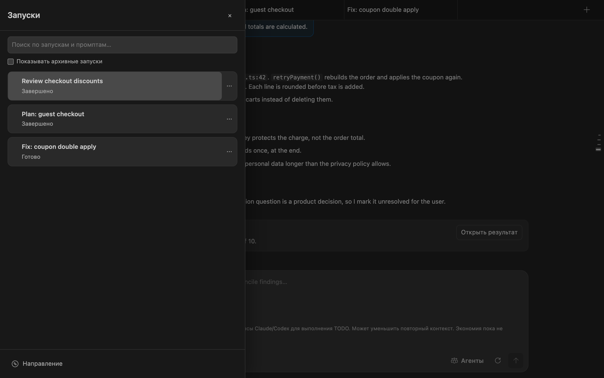
Выбор конвейера
Выбор конвейера находится под полем ввода. Поиск охватывает названия, идентификаторы, описания и роли участников. Фильтры разделяют обычные, специализированные и внутренние рабочие процессы; пользовательские конвейеры добавляют «Пользовательские» и «Все». Здесь выбирается работа; «Агенты» выбираются провайдеры.
{kind=link}
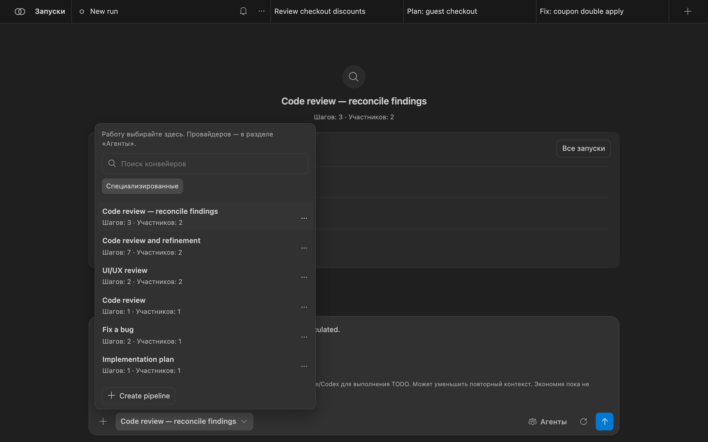
Каждый шаг конвейера относится к одному из видов:
agent— один или несколько участников делают ход, при необходимости параллельно или до достижения согласия;assignRoles— привязать заданные вами роли к агентам;checklist— превратить принятые замечания в строгие задачи;executeChecklist— выполнить выбранные задачи через контроллер. Это должен быть последний включённый шаг.
Число раундов согласования ограничено. При достижении предела конвейер указывает, что произойдёт: решение человека, сбой или заключение ведущего. Согласие выбирает результат одного запуска; оно не доказывает, что результат верен. См. список встроенных конвейеров.
Назначение агентов
«Агенты» перечисляет все роли, нужные выбранному конвейеру. Для каждой роли выберите провайдера и, если провайдер её сообщает, модель. Изменения действуют для этого запуска и отмечаются как переназначенные; «Сбросить к значениям по умолчанию» восстанавливает выбор самого конвейера.
{kind=link}
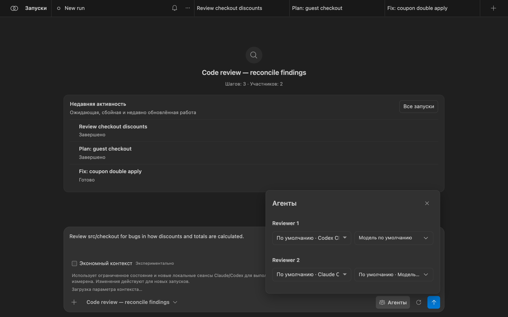
Bachata не поставляется с каталогом моделей. Если Codex может перечислить свои модели, Bachata показывает этот список и отклоняет модель, которой установленный Codex не предлагает. Если провайдер не умеет перечислять модели, введённое вами имя отправляется как есть. Bachata никогда не меняет провайдера или модель за вас. Чтобы провайдер никогда не запускался, добавьте его в bachata.disabledProviders.
Условия запуска
Кнопка с шестерёнкой рядом с отправкой открывает «Настройки запуска». «Параметры запуска» (итерации, режим фиксированного числа или до чистого результата, доставка) действуют только для этого запуска. «Сведения о запуске» — это условия, которые Bachata определила именно для этого запуска:
- «Гарантия» — какой результат этот запуск может дать, например «Только чтение»;
- «Провайдеры» и их готовность;
- «Область работ и коммиты» — рабочий каталог, пути для записи, чтения и защищённые пути. Bachata никогда не создаёт коммиты;
- «Проверка» — какие проверки контроллера выполняются, если они есть;
- «Пределы запуска», «Решения человека», «Запасной вариант», «Завершение»;
- «Что получает каждый провайдер» — исходящий контекст, исключения и скрытые фрагменты по каждому провайдеру.
![Панель настроек запуска с развёрнутыми сведениями для «Code review — reconcile findings», отмеченными как «Проверка · только чтение». Гарантия: этот запуск может читать выбранную область и не может изменять файлы. Провайдеры: Reviewer 1 на Codex и Reviewer 2 на Claude Code, оба готовы. Область: запись в репозиторий запрещена, путь для чтения src/checkout, защищённые пути .env и .git, коммиты не создаются. Проверка: проверки контроллера не выполняются. Пределы запуска: 1 итерация, не более 10 раундов согласования до решения человека.](../img/ru/run-contract.png)
Если что-то мешает запуску — например, неготовый провайдер или политика репозитория, которая его отклоняет, — условия перечисляют это, а кнопка отправки остаётся недоступной до устранения.
Чтение результата
Откройте «Выполнение» (значок списка на вкладке запуска) или выберите «Открыть результат» в «Чате». Сверху перечислены шаги конвейера и их состояние. Нижняя панель показывает, сколько замечаний выбрано, и предлагает следующий конвейер.
{kind=link}
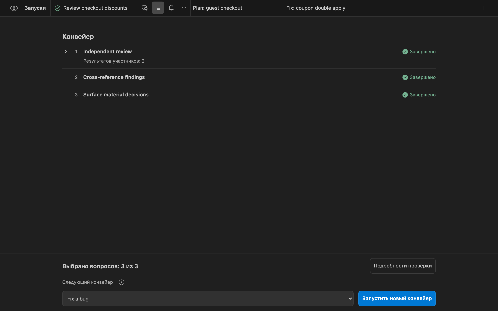
«Подробности проверки» открывает результат запуска:
- «Оценка», например «Завершено · проверено моделью · без проверки». Она описывает, чем закончился этот запуск, а не то, верна ли программа.
- «Итоговое заключение» и кто его вынес, например единогласное согласие обоих проверяющих.
- «Замечания», разделённые на согласованные замечания (принятые после возражений) и замечания несогласованные , требующие вашего подтверждения. У каждого есть место в коде, свидетельства и выдвинутые против него возражения.
- «Подробности оценки» — неразрешённые риски, пробелы в свидетельствах и журнал свидетельств (изменённые файлы, проверки, происхождение заключения).
![Результат запуска: «Завершено · проверено моделью · без проверки». «Изучите замечания ниже. Этому запуску нечего применять.» Итоговое заключение: два замечания приняты после возражений, одно разногласие требует вашего решения, единогласным согласием Reviewer 1 (codex-app-server) и Reviewer 2 (claude-code). Замечания: 2 требуют действий, 1 требует решения человека. Согласованные замечания: «Discount applied twice on retry» в src/checkout/applyCoupon.ts:42 и «Currency rounding before tax» в src/checkout/totals.ts:18, у каждого есть свидетельства и возражения.](../img/ru/result-center.png)
«Копировать результат» копирует читаемую сводку. «Ещё» публикует замечания в панели «Проблемы», открывает систему контроля версий и экспортирует запуск в виде пакета JSON, отчёта со свидетельствами в Markdown или замечаний SARIF. Экспорт не содержит ссылок на беседу провайдера и идентификаторов сеанса.
Представление «Направление»
«Направление» хранит важное между запусками, чтобы вам не приходилось читать стенограммы. Откройте его внизу панели запусков. Оно показывает цель, следующее полезное действие и то, что требует вас:
- «Решения, требующие вашего участия» — вопросы, поднятые конвейером и меняющие направление, с компромиссами и свидетельствами;
- «Замечания, требующие вашего участия» — замечания, по которым участники не пришли к согласию;
- «Принятые замечания к исправлению», принятое направление и критерии приёмки, ход проверки, артефакты и проверки репозитория.

Решения, которые можно зафиксировать, если состояние пункта это допускает:
| Решение | Значение |
|---|---|
| Принять | Это настоящее, и Bachata должна действовать по нему. |
| Отклонить | Не настоящее. Пункт уходит из активной области и остаётся в истории. |
| Отложить | Настоящее, но не сейчас. |
| Заменить | Существующая более поздняя запись заменяет эту. |
| Открыть заново | Закрытый пункт снова активен. Требуются письменное обоснование и новые существенные свидетельства. |
Вам не нужно принимать замечание, которое конвейер уже принял после возражений более чем одного участника. Вы вмешиваетесь только в исключительных случаях. Ничего не удаляется; разрешённые пункты уходят в историю.
Исправление и применение
Проверка только для чтения не создаёт того, что можно применить. Изменение создаёт запуск исправления. У принятого замечания выберите «Исправить замечание» в «Направлении» либо выберите конвейер с правом записи, например Fix a bug в качестве следующего конвейера в «Выполнении».
{kind=link}
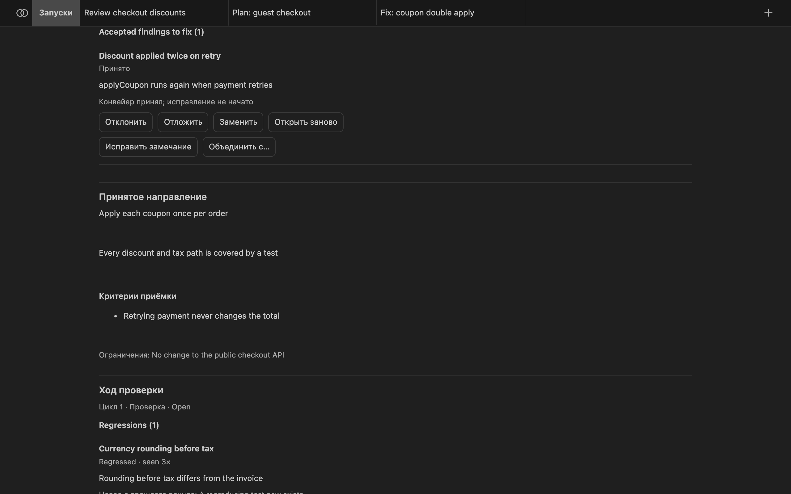
Запуск исправления получает промпт, ограниченный этим одним замечанием: предмет, место, свидетельства и выдвинутые возражения. Конвейер исправления Bachata берёт из bachata.fixPipelineId, затем из конвейера, выбранного в исходном запуске, затем встроенный managed-fix. Конвейер только для чтения отклоняется.
Применение сохранённой работы
Одни рабочие процессы изменяют выбранную папку напрямую; изолированные держат изменения в отдельном рабочем дереве Git, пока вы их не примените. Условия запуска указывают, что именно происходит. При применении:
- Bachata помещает работу в индекс вашего рабочего дерева на текущей ветке и не создаёт коммит. Вы просматриваете её в системе контроля версий и коммитите сами.
- Применение отклоняется, если проверка устарела, не прошла или была отменена. Применение запуска без однозначного результата — это явное переопределение.
- При применении части работы проверки запуска выполняются заново ровно для выбранных вами байтов.
Раунды новых проверок
Новая проверка начинает независимую проверку текущего состояния репозитория. Сеансы провайдеров сбрасываются, и никакие прежние выводы не попадают в промпты. Прежние замечания используются для сравнения после проверки, но никогда до неё.
Когда в том же цикле проверки появляется второй раунд, «Направление» сообщает, что изменилось: новые, повторные, разрешённые и регрессировавшие замечания, замечания, открытые заново по новым свидетельствам, и изменения решений. Тождество замечания не зависит от формулировки, поэтому перефразированный повтор — это одно замечание с двумя появлениями.
Bachata сообщает о насыщении только когда несколько новых проверок подряд не добавили ничего существенного, принятые замечания разрешены, ключевые решения закрыты, а требуемые проверки актуальны. Насыщение означает, что повторные проверки перестали находить существенные проблемы. Это не доказательство корректности.
Новая проверка запускает только конвейер лишь для чтения, дающий замечания. Задайте bachata.freshReviewPipelineId , чтобы выбрать такой конвейер, когда выбранный не подходит.
Редактирование конвейеров
В настройках запуска выберите «Изменить конвейер», «Новый конвейер» или «Ответвить выбранный». Редактирование встроенного конвейера создаёт копию. В редакторе есть структурированная форма и режим JSON для точных определений. Шаги можно переупорядочивать, дублировать и отключать; «Ограничители», «Агенты» и «Роли» — отдельные разделы.
{kind=link}
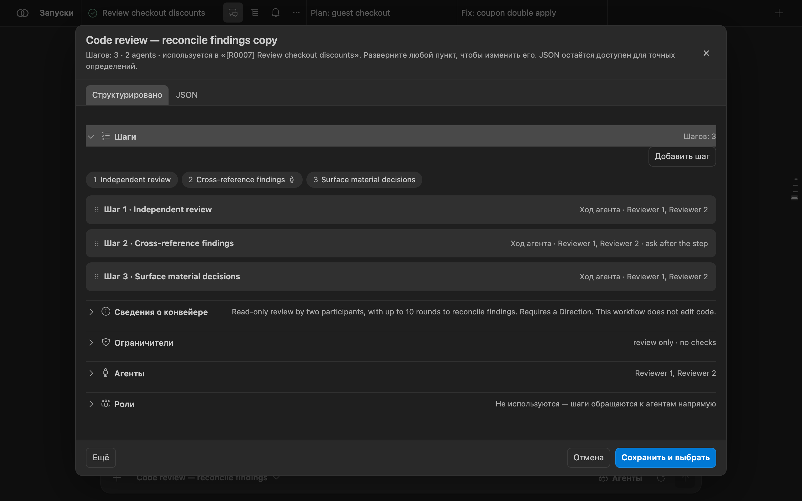
Включите bachata.advancedMode , чтобы показать полный редактор: роли, согласование, типизированные выходные данные, точки участия человека, возможности, режимы разрешений, политики одобрения, шаблоны промптов и политики путей. Конвейеры можно экспортировать и импортировать в JSON (версия JSON конвейера 1). Запуски сохраняют точный снимок конвейера, с которым они начались.
Пилот с ручным включением
Меньше повторного контекста для модели
В Bachata появилась первая исходная реализация режима выполнения с экономией токенов для Claude Code и Codex. Цель — отправлять минимально достаточное состояние для следующего решения вместо повторной отправки полных прежних ответов, вывода проверок и истории беседы.
bachata.executionContextMode; в расширенных настройках значение по умолчанию остаётся прежним.
legacy остаётся значением по умолчанию. Активные и восстанавливаемые запуски сохраняют записанный режим.
Выпускные критерии проекта ещё не пройдены. Это не утверждение о токенах, стоимости, задержке или качестве.
Почему это может помочь
- Локальные провайдеры могут хранить беседу, пока Bachata дополнительно отправляет явную передачу состояния.
- Раунды согласования могут передавать полные ответы других участников в последующие раунды.
- Работа через браузер может требовать отдельных ответов модели для изменения и заранее определённых проверок контроллера.
- Текущие байтовые пределы не дают полезной нагрузке разрастаться, но не создают точных свидетельств, к которым можно вернуться.
Порядок внедрения
- Реализовано: сохранять точные принятые свидетельства. Сохранять принадлежащие Bachata промпты, полученные ответы и свидетельства контроллера до создания компактных предпросмотров. Если точные свидетельства сохранить нельзя, компактное выполнение не начинается.
- Реализовано и выключено по умолчанию: пилот с ограниченным локальным состоянием. Начинать новые сеансы Claude Code или Codex с типизированным состоянием задачи, последним наблюдением контроллера и ограниченными ссылками на свидетельства. Текущий порядок остаётся по умолчанию.
- Безопасно переносить согласие. Переносить согласия, споры, авторство и неразрешённые решения, не считая опущенные возражения разрешёнными.
- Добавить восстановление контекста в браузере и безопасное объединение действий. Позволить контроллеру выдавать точные страницы свидетельств и объединять изменение с уже разрешёнными проверками только там, где границы одобрения и восстановления остаются ясными.
Граница безопасности
Контроллер по-прежнему отвечает за Git, область записи, проверку, интеграцию и восстановление. Некорректное, устаревшее, неполное или слишком объёмное состояние приводит к отказу. Точные принятые свидетельства остаются экспортируемыми, приватная история провайдера не выдаётся за записанную, и никакой слой телеметрии или измерений во время работы не добавляется.
Прочитайте техническое описание и внешнюю работу SoL-Pi , послужившую поводом для этого исследования. Результаты, описанные в работе, не являются результатами Bachata.
Browser Bridge
Используйте чаты в браузере из Bachata
Bachata Browser Bridge — отдельное расширение Chrome. Оно соединяет Bachata в VS Code с чат-сайтами ИИ, такими как ChatGPT и Claude, чтобы беседа в браузере могла быть участником конвейера. Когда выполняется браузерный шаг, Bridge отправляет сообщение в подключённый чат и возвращает ответ в VS Code.
Оно нужно только для браузерных участников. Codex и Claude Code его не используют.
Требования
- Chrome 116 или новее.
- Локальное окно VS Code с Bachata. Remote SSH, WSL и Codespaces не могут достучаться до локального браузера.
- Сборка Bridge, версия протокола которой совпадает с вашей сборкой Bachata. Несовпадение отклоняется, а не обрабатывается частично: обновляйте оба вместе.
- Вкладка ChatGPT или Claude с выполненным входом либо другой чат-сайт, настроенный вами самостоятельно.
Установка Bridge
- Откройте Bachata Browser Bridge в Chrome Web Store.
- Выберите «Установить», затем подтвердите установку.
- Обновляйте Bachata для VS Code и Browser Bridge вместе, чтобы версии их протоколов совпадали.
Для офлайн-установки или установки для разработки скачайте ZIP и его контрольную сумму со страницы официальных выпусков, проверьте командой shasum -a 256 bachata-browser-bridge-<version>.zip, распакуйте архив, затем загрузите эту папку из chrome://extensions с включённым режимом разработчика. Сборка из исходников даёт загружаемую папку dist/ ; корень репозитория загрузить нельзя.
Сопряжение с VS Code
- В Bachata откройте «Агенты» и назначьте Browser Bridge роли. Вверху раздела «Агенты» появляется индикатор состояния Bridge; если Bridge не сопряжён, на нём написано «Сопрячь Bridge». Нажмите его.
- Выберите «Копировать код сопряжения». «Найти браузер» снова запускает поиск; «Сбросить сопряжение» выдаёт новый код.
- Откройте всплывающее окно Bridge в Chrome и выберите Paste & connect. Если вы вводите или вставляете код в поле сами, выберите «Connect to VS Code» вместо этого.
{kind=link}
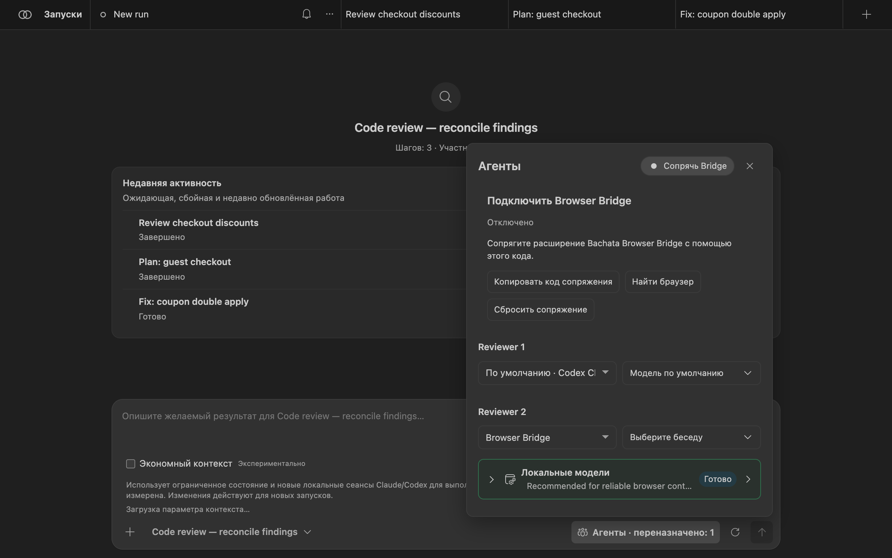

Локальный адрес подставляется автоматически. Открывайте «Connection settings» только если VS Code показывает другой адрес. Bridge поддерживает одно соединение, поэтому им одновременно владеет только одно окно VS Code на профиль пользователя; другие окна по-прежнему могут использовать Codex и Claude Code.
Выбор чата
- Откройте беседу ChatGPT или Claude и выполните вход.
- Во всплывающем окне выберите «Refresh tabs». В каждой строке показаны провайдер, заголовок, готовность и ограничения, если они есть. «Details» показывает идентификацию вкладки и беседы.
- Выберите «Use this chat» у готовой беседы. Эта кнопка есть только у готовых строк и только при наличии соединения.
- В разделе «Агенты»Bachata выберите эту беседу для браузерной роли.
{kind=link}
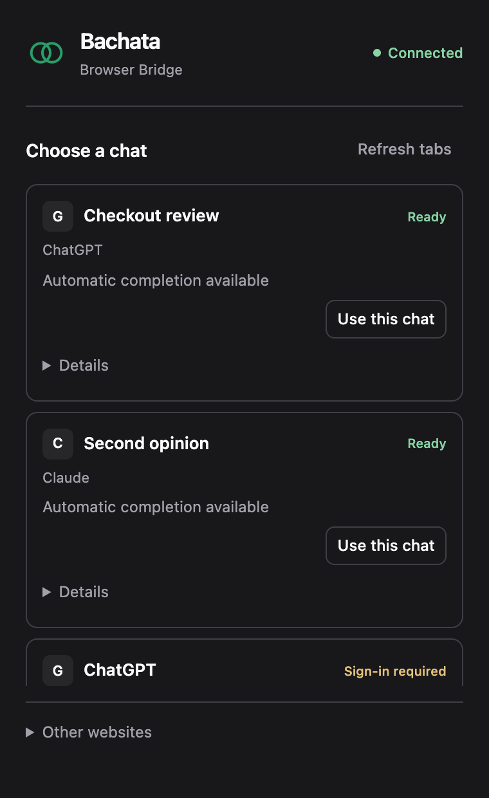
{kind=link}
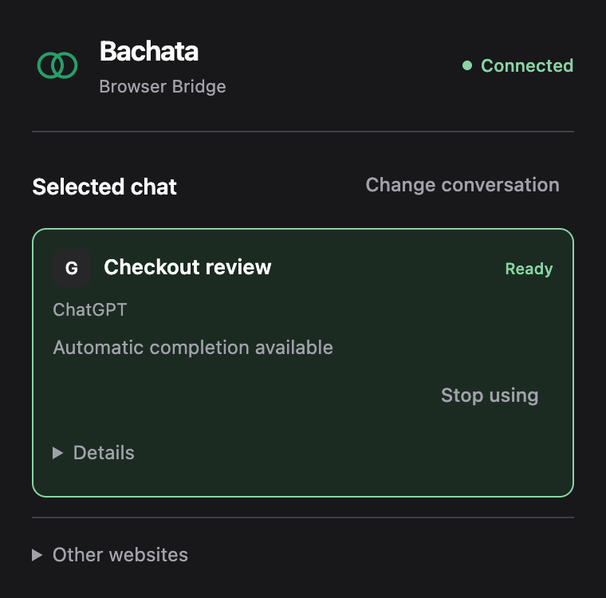
{kind=link}
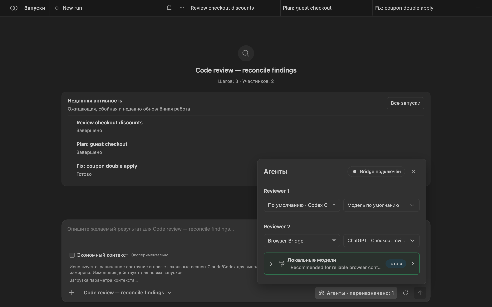
Привязка сохраняется при закрытии всплывающего окна и перезапуске служебного процесса браузера. Привязывать заново нужно, только если вкладка закрыта, перешла на другой сайт или её беседа изменена вручную.
Другие чат-сайты
Для сайта, отличного от ChatGPT и Claude, откройте Другие сайты во всплывающем окне и выберите «Set up current website», затем разрешите показанный источник. Закройте всплывающее окно и воспользуйтесь панелью настройки на странице: определите автоматически или укажите элементы управления (поле ввода и область беседы обязательны; кнопки отправки, остановки и новой беседы необязательны), затем выполните проверку. Проверка не отправляет сообщение в чат.

Другие сайты получают только текст; изображения и загружаемые файлы не поддерживаются. Сайт без проверенных кнопок отправки и остановки подходит для ручных сценариев, но не для автономных управляемых запусков. Непривязанные сайты никогда не обнаруживаются, и Bridge никогда не открывает такую вкладку за вас.
Ограничения
- Сайты провайдеров меняются без предупреждения. Работающая сборка Bridge является свидетельством только для тех версий сайтов, на которых она проверялась.
- Bridge не автоматизирует вход и CAPTCHA и не добавляет скрытый текст в промпт.
- После сбоя восстановление показывает, что было записано, и никогда не отправляет промпт заново автоматически.
Справочник
Команды
Все команды находятся в палитре команд под префиксом Bachata:.
| Команда | Что это даёт |
|---|---|
| Откройте | Открыть панель Bachata. |
| Настройка | Выбрать цель и число ассистентов, работающих над ней. |
| Диагностика | Проверить провайдеров, Git и требования конвейера, с предложением исправлений. |
| Проверить файл / Проверить выделенный фрагмент | Подготовить черновик проверки для текущего файла или выделения. |
| Проверить проиндексированные изменения / Проверить незакоммиченные изменения | Подготовить черновик проверки для локальных изменений. |
| Проверить коммит / Проверить диапазон коммитов / Проверить ветку относительно базовой | Подготовить черновик проверки для истории Git. |
| Опубликовать замечания в панели «Проблемы» | Показать замечания в панели «Проблемы». |
| Исправить диагностическое сообщение | Подготовить черновик исправления для сообщения из редактора или панели «Проблемы». |
| Описать конвейер | Описать, что делает конвейер. |
| Проверки репозитория / Настроить проверки и политику репозитория | Объявить проверки репозитория, которые может выполнять запуск. |
| Выполнить TODO.md, Предпросмотр плана TODO, Продолжить / Остановить / Прервать запуск TODO, Показать состояние запуска TODO | Оркестрировать задачи из файла TODO.md . |
| Улучшить этот проект | Запустить рабочий процесс самоулучшения. |
| Открыть пакет запуска / Воспроизвести пакет запуска | Открыть экспортированную запись запуска. |
| Записать внешнее свидетельство | Записать свидетельство, полученное вне Bachata. |
| Локальные данные | Просмотреть и удалить локальные данные запусков. |
| Владение рабочей областью | Показать, какое окно VS Code может выполнять работу в этой рабочей области. |
| Снять карантин с ресурсов | Снять карантин с общих ресурсов. |
Встроенные конвейеры
| Конвейер | Описание |
|---|---|
| Code review | Проверка только для чтения одним участником. Замечания остаются из одного источника. |
| Code review — reconcile findings | Проверка только для чтения двумя участниками, до 10 раундов на согласование замечаний. Требуется «Направление». |
| Code review and refinement | Два участника проверяют и согласовывают замечания не более чем за 4 раунда; затем исполнитель исправляет подтверждённые замечания в объявленной области. |
| UI/UX review | Проверка только для чтения удобства использования, доступности и визуальной иерархии двумя проверяющими. |
| Review and prepare tasks | Два участника согласовывают замечания, затем готовят список задач с возможностью выбора. |
| Identify decisions for you | Два участника согласовывают выборы, требующие человеческого суждения. Только чтение. |
| Implementation plan | Составить план реализации без изменения файлов. |
| Implementation plan — reconcile proposals | Два планировщика согласовывают план не более чем за 10 раундов. Требуется «Направление». |
| Fix a bug | Диагностика и исправление одним участником. Выполняет объявленные проверки контроллера; коммит не создаёт. |
| Fix a bug — reviewed tasks | Два участника согласовывают диагноз; вы выбираете ограниченные задачи, которые выполнит контроллер. |
| Fix within a declared scope | Один исполнитель работает внутри настроенных путей; контроллер выполняет объявленные проверки. Требуется «Направление». |
| Diagnose and fix — model review | Два участника согласовывают диагноз, выполняют исправление и проверяют его. Проверкой является проверка моделью. |
| Deliver a feature | Согласовать требования и проект, затем реализовать и проверить в объявленной области с проверками контроллера. |
| Product direction review | Проверить продуктовые решения и согласовать рекомендации. Требуется «Направление». |
Конвейеры с пометкой «Внутренние» в списке выбора — это этапы контроллера для оркестрации TODO и самоулучшения.
Основные настройки
| Параметр | По умолчанию | Назначение |
|---|---|---|
bachata.codexCommand | codex | Исполняемый файл app-server Codex. |
bachata.claudeCommand | claude | Исполняемый файл Claude Code. |
bachata.preferredProvider | auto | Предпочитаемый провайдер, когда конвейер предлагает несколько. |
bachata.disabledProviders | [] | Провайдеры, которые Bachata не должна запускать. |
bachata.advancedMode | false | Показывать полный редактор конвейеров. |
bachata.notificationMode | material | Какие уведомления показывает Bachata. |
bachata.fixPipelineId | пусто | Конвейер, используемый для «Исправить замечание». |
bachata.freshReviewPipelineId | пусто | Конвейер для новых проверок, когда выбранный не подходит. |
bachata.maxPipelineIterations | 10 | Максимум последовательных итераций для одного запуска. |
bachata.browserBridgePort | 43127 | Локальный порт, к которому подключается Browser Bridge. |
bachata.todoFile | TODO.md | Список задач, используемый оркестрацией TODO. |
Параметры, расширяющие возможности запуска, — например, режимы разрешений и внешние рабочие каталоги — читаются только из пользовательских или машинных настроек, поэтому открытый репозиторий не может сам выдать себе больше прав.
Приватность
Bachata работает с вашей локальной копией. Нет ни учётной записи Bachata, ни размещённого сервиса, ни телеметрии. Промпты, выбранный код и ответы идут к выбранным вами провайдерам; условия запуска показывают, что получает каждый провайдер, ещё до начала. Учётные данные провайдера остаются в его собственном CLI или сеансе браузера.
О скриншотах
На скриншотах показана настоящая панель Bachata (dist/webview.js) и настоящее всплывающее окно Bridge, отрисованные в Chrome вне VS Code с цветами темы VS Code Dark Modern. Репозиторий demo-shop, его запуски, замечания, решения и вкладки чатов — выдуманные демонстрационные данные. В VS Code панель отображается внутри вкладки редактора.